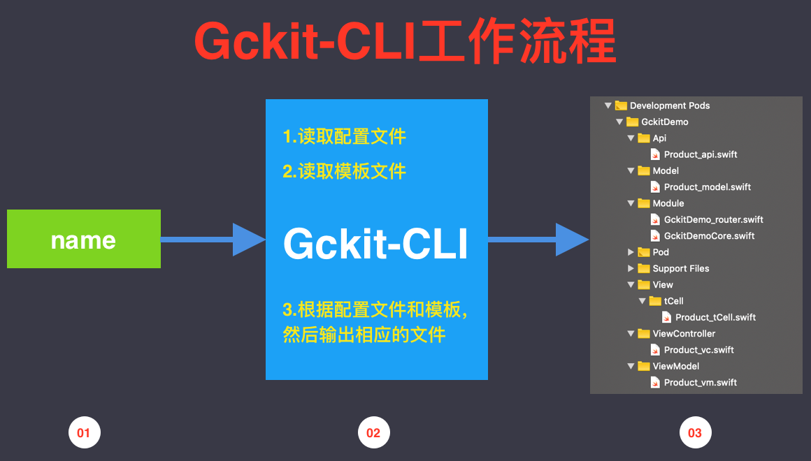
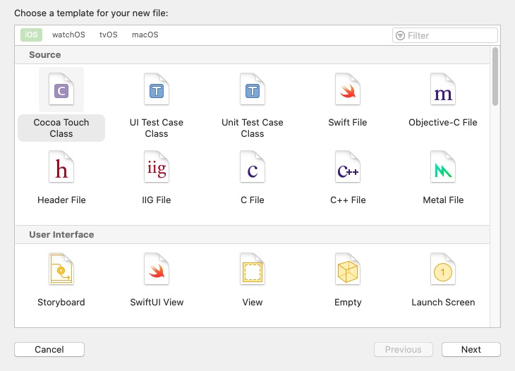
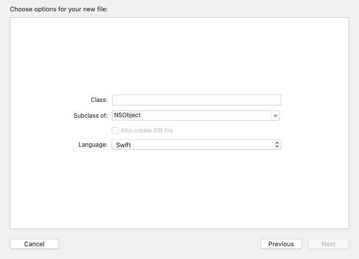
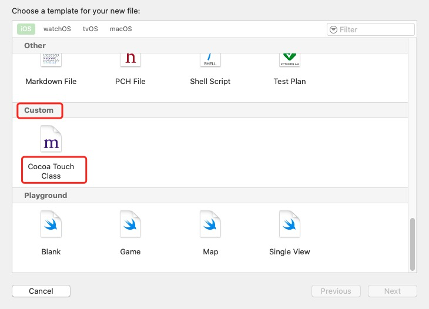

前言：开发效率和质量是每位开发人员永恒的追求，而Xcode的模板功能可以帮助你更好的达成这个目标，更难能可贵的是它还能在一定程度上帮助你统一实现逻辑和开发规范。
为什么需要使用模板
在日常开发中，经常会碰到开发类似功能的情况，我们可以使用面向对象编程的继承来对相同部分进行封装，利用多态来进行特定功能区分，这样可以提高开发效率和质量。当然也有函数式开发和面向协议编程等，但是万变不离其宗，大家都在提模块化，组件化，以提高开发效率、质量、可维护性等。但是不管使用哪种框架和编码方式，都不可能干掉所有的重复代码和重复逻辑，依然会存在很多复制、粘贴等重复操作。例如我们在项目基础框架之上实现两个列表模块A和B，那么A和B模块中大部分的代码文件都是类似的，里面的内容也都是类似的。
为了减少这些重复操作导致的效率低下，我们可以使用Dash或Gist等工具，创建代码片段，来快速的复制粘贴代码，但是这些只限定于单个文件内的文本编辑。如果你所做的项目对某一类功能的实现已经有了固定套路，例如一个常见的列表页面，包含下拉刷新、加载更多等功能，你选择了MVC或MVVM等架构模式，那么在单个项目内，每个列表页面的代码（在一个文件或多个文件中）将会大量相似，每次都要重复的创建类似的文件，写类似的实现。如果是多人开发，还可能会在大体框架基础下搞出好几套大同小异的代码来，而这样的害处是显而易见的。
如何使用模板加速开发？
模板工具
在软件开发中，要提高效率，就得把重复的工作交给电脑来做，电脑会做的又快又好。针对上面提到的问题，我们完全可以创建一套模板，然后通过脚本或者IDE来批量生成代码，生成代码后，只需要修改其中的少量代码就可以完成全部功能，这样就避免了大量的文件创建和代码复制粘贴操作，也避免了一些由于操作失误导致的bug，同时也避免了一些不同开发人员的不同实现逻辑的问题。
我了解到有两种实现方案：
- 介绍 | Gckit-CLI
 - Xcode自定义模板
我刚开始是使用的Gckit-CLI工工具，但是发现Xcode原生支持自定义模板后，我转向了使用Xcode自定义模板，因为集成在IDE中使用起来更加的便捷。所以这里我只介绍Xcode自定义模板功能的使用，对Gckit-CLI感兴趣的可以去它的官网自行查看。
Xcode自定义模板的使用
Xcode系统默认模板说明
Xcode在创建项目或文件时，就是使用了Xcode自带的模板功能。 它包含iOS、watchOS、tvOS、macOS菜单，在iOS菜单下又分为Source、User Interface等类别，类别里面有Cocoa Touch Class、Swift File等模块，图示如下：

这些模板的路径位置如下：
- iOS 平台模版的位置：
/Applications/Xcode.app/Contents/Developer/Platforms/iPhoneOS.platform/Developer/Library/Xcode/Templates - watchOS 平台的模版位置：
/Applications/Xcode.app/Contents/Developer/Platforms/WatchOS.platform/Developer/Library/Xcode/Templates - tvOS 平台的模版位置：
/Applications/Xcode.app/Contents/Developer/Platforms/AppleTVOS.platform/Developer/Library/Xcode/Templates - macOS 平台文件模版的位置：
/Applications/Xcode.app/Contents/Developer/Library/Xcode/Templates
这里我们仅拿iOS平台模板来进行说明
我们看iOS平台模板的目录结构：
1 | ├── File\ Templates |
Project\ Templates是创建项目的模板，这里不做说明。File\ Templates目录下的内容就是上面图示中iOS菜单下的内容，例如我们根据Source -> Cocoa Touch Class的模板创建文件，会进入如下页面：

Xcode模板页面的生成
Cocoa Touch Class模板文件目录结构如下
1 | ├── File\ Templates |
上述页面对应Cocoa Touch Class.xctemplate目录下的TemplateInfo.plist文件，这个页面是根据此文件生成的。 我们看下TemplateInfo.plist文件的内容（内容太多，只贴出部分，上面的注释是作者添加的）：
1 | ··· 省略部分 |
模板的匹配
用户在上述页面填写和选择了内容后，点击Next创建，就进入了模板匹配逻辑。假如用户在Subclass of选项中输入或选择了UICollectionReusableView，不勾选Also create XIB file勾选框，在Language选项中选择Objective-C，那么Xcode就会将这两个值按顺序拼接起来，得到文件名：UICollectionReusableViewObjective-C，然后会在TemplateInfo.plist文件所在目录中，搜索文件名为UICollectionReusableViewObjective-C的文件夹，如果有就取这个文件夹内模板文件来生成代码（有几个文件就生成几个）。如果没搜索到，就进行默认创建。
模板代码如何生成
在上面流程中，已经匹配到了UICollectionReusableViewObjective-C模板，这个模板存在两个文件。
1 | UICollectionReusableViewObjective-C |
其中___FILEBASENAME___.h的内容是：
1 | //___FILEHEADER___ |
Xcode会使用用户在创建页面输入的类名来替换文件名中的___FILEBASENAME___，使用用户在Subclass of中输入的内容来替换___VARIABLE_cocoaTouchSubclass___，使用之前设置好的文件注释头来替换___FILEHEADER___，全部替换完成后写入文件输出，呈现给用户的就是创建文件完成。到此为止，通过模板创建文件整个流程全部走完了。
Xcode模板的相关配置和字段较多，可以根据里面的内容和展示的页面和行为来猜测每个字段的含义，然后依葫芦画瓢来学习Xcode模板是如何工作的。（如果您有找到这方面的文档，请评论区告诉我）
如何创建Xcode自定义模板
自定义模板和系统模板的实现和使用基本是一样的。将自定义模板放在特定目录下时，Xcode就会将自定义模板加载出来。
修改模板后要重启xcode才能生效。
自定义模板的路径是：~/Library/Developer/Xcode/Templates(如果不存在Templates目录，就手动创建一个。)
在此路径下，我们创建一个Custom目录，将系统模板中的Cocoa\ Touch\ Class.xctemplate目录复制到Custom目录下，这样在工程中新建文件就可以看到自定义的Custom目录及它下面的Cocoa\ Touch\ Class模板了：

到了这一步，你就会清楚自定义模板的套路了，剩下的就是依葫芦画瓢来实现自己的模板了。
我根据个人常用编程习惯，创建了一套模板，大家可以下载进行参考。下载地址： GitHub - xx-li/CustomTemplates: Xcode rapid development templates，
使用图示：
后文
由于模板的匹配是目录匹配方式，所以每一个选项都会对应一个新的目录，例如一个2*2的选项，就会需要四个模板目录来进行匹配。当我们对模板进行功能细分时，就需要创建大量的模板，而每一个模板可能有大量内容是相似的，修改一个基础逻辑就要对所有的模板文件进行修改。为了解决这种问题，可以使用脚本来创建模板。
在上面的仓库中CustomTemplates，有用Python写的模板生成脚本。因为是用于个人项目，生成的代码缺乏基础框架支持，并不能直接使用，您可以参考编写适用于自己的脚本和模板。